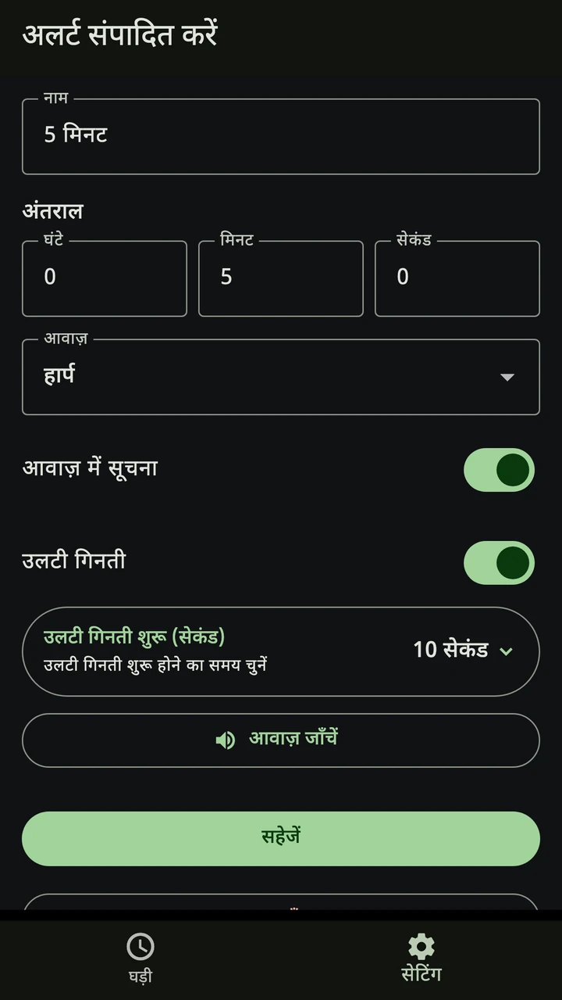
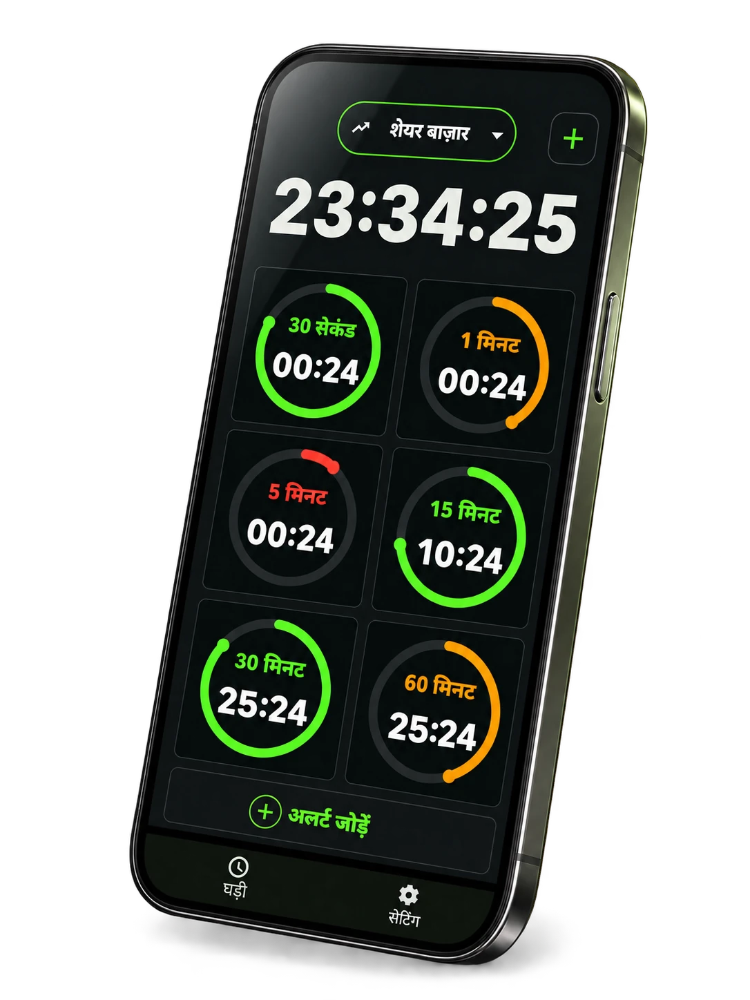
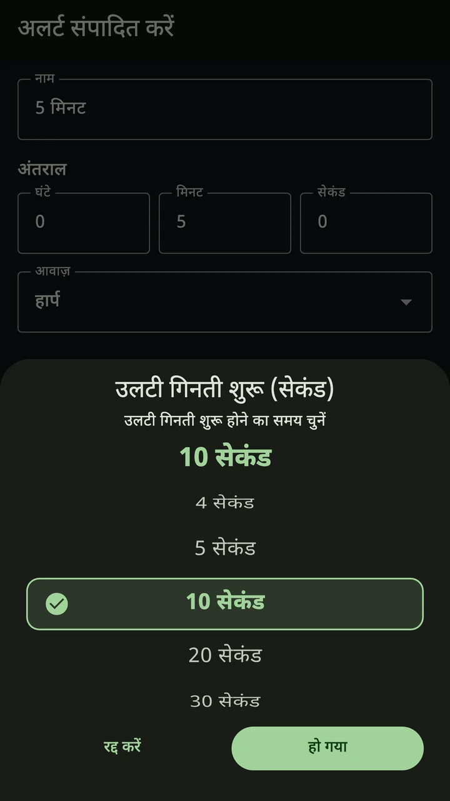
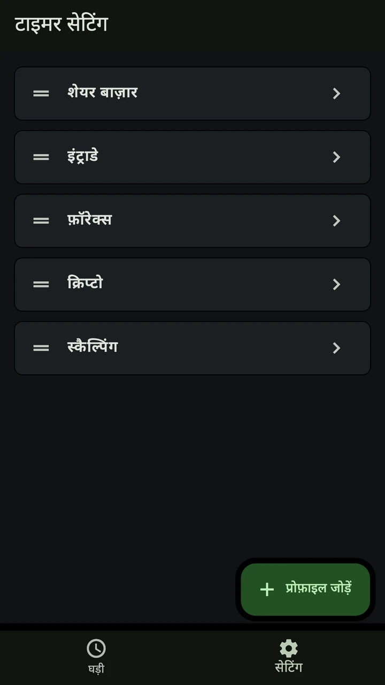

एक साथ कई अंतराल
1, 5, 15 मिनट या अपनी पसंद का अंतराल चुनें। एक ही स्क्रीन पर कई टाइमर देखें।

1, 5, 15 मिनट या अपने चुने हुए अंतराल के लिए ट्रेडिंग टाइमर। आख़िरी सेकंड की गिनती हिंदी में सुनें, ताकि बार-बार घड़ी देखे बिना चार्ट पर ध्यान दे सकें।


डाउनलोड मुफ़्त है। ऐप खुलते समय के विज्ञापन हटाने के लिए एक बार खरीदारी का विकल्प है।

1, 5, 15 मिनट या अपनी पसंद का अंतराल चुनें। एक ही स्क्रीन पर कई टाइमर देखें।

आवाज़ कब शुरू हो, यह चुनें। बाकी समय सुनते हुए नज़र चार्ट पर रखें।

शेयर, फ़ॉरेक्स और क्रिप्टो की सेटिंग अलग सहेजें। प्रोफ़ाइल बदलें, अलर्ट दोबारा सेट न करें।

मौजूदा प्रोफ़ाइल इस्तेमाल करें या अपने बाज़ार के लिए नई बनाएँ।
समय, अलर्ट की आवाज़ और काउंटडाउन शुरू होने का समय चुनें।
अपने प्लेटफ़ॉर्म पर चार्ट देखें और Trader Timer के अलर्ट सुनें।
5 मिनट का अंतराल चुनें और आख़िरी 10 सेकंड के लिए आवाज़ में गिनती चालू करें। चार्ट के साथ Trader Timer खुला रखें और तय समय पर गिनती सुनें।
शुरू करने से पहले, ज़रूरी बातें।
हाँ। ऐप का इंटरफ़ेस और आवाज़ में उलटी गिनती हिंदी में उपलब्ध हैं। आप चुन सकते हैं कि कितने सेकंड पहले गिनती शुरू हो।
हाँ। अपने चार्ट के हिसाब से 1, 5, 15 मिनट या अपनी पसंद का अंतराल सेट करें। Trader Timer तय किए गए समय की उलटी गिनती दिखाता है। यह आपके ब्रोकर से नहीं जुड़ता और कीमतें नहीं लेता।
हाँ। ऐप मुफ़्त में डाउनलोड कर सकते हैं। ऐप खुलते समय विज्ञापन दिखाए जा सकते हैं। इन्हें हटाने के लिए एक बार खरीदारी का विकल्प है। कीमत स्टोर में दिखाई जाती है।
Android पर दूसरे ऐप इस्तेमाल करते समय या स्क्रीन बंद होने पर अलर्ट सुनने के लिए बैकग्राउंड में चलाने का विकल्प चालू करें। बैटरी बचत की सेटिंग से अलर्ट में देरी हो सकती है। iPhone पर अलर्ट इस्तेमाल करते समय ऐप खुला रखें।
नहीं। Trader Timer समय के अंतराल पर नज़र रखने का ऐप है। यह कीमतों का विश्लेषण नहीं करता और कोई ट्रेड नहीं करता।
iPhone या Android पर मुफ़्त डाउनलोड करें और अपना पहला अंतराल सेट करें।